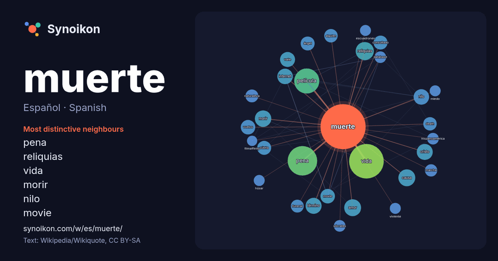

Español · Spanish · popular word
muerte
“death” · The words found around it in 1459 instances from Spanish Wikipedia, Wikiquote.

Most distinctive neighbours
- pena 52×
- reliquias 22×
- vida 22×
- morir 17×
- nilo 16×
- movie 15×
- película 14×
- cristo 14×
- súbita 14×
- consultado 14×
- amor 13×
- internet 13×
- death 12×
- funeral 11×
- alguien 11×
- causa 11×
- vuelos 10×
- database 9.9×
- sócrates 9.8×
- valle 9.5×
× = how many times more often than in general Spanish Wikipedia text.
Most frequent neighbours
- vida 80
- pena 58
- película 42
- guerra 28
- reliquias 22
- amor 19
- causa 19
- españa 19
- hombre 19
- morir 18
- cristo 17
- término 17
- internet 16
- nilo 16
- santa 15
- valle 15
- movie 14
- vuelos 14
- ángel 13
- consultado 13
In context
- le conoce como «síndrome de muerte súbita infantil», «muerte en cuna» o «muerte blanca». Generalmente se encuentra muerto al bebé después de haberlo puesto Wikipedia snippets · Muerte
- El concepto de la muerte como una entidad antropomórfica ha existido en muchas culturas desde los albores de la humanidad. La muerte (como personificación) Wikipedia snippets · Muerte (personificación)
- La pena de muerte, pena capital, ejecución o ajusticiamiento consiste en provocar la muerte a una persona condenada por parte del Estado, como castigo Wikipedia snippets · Pena de muerte
- le conoce como «síndrome de muerte súbita infantil», «muerte en cuna» o «muerte blanca». Generalmente se encuentra muerto al bebé después de haberlo puesto Wikipedia snippets · Síndrome de muerte súbita del lactante
- tradicional de la muerte e incluso distorsiona su aspecto físico para alejarse de las supersticiones de su época. La figura del tribunal de la Muerte constituye Wikipedia snippets · Sueño de la muerte
- Nuestra Señora de la Santa Muerte, a menudo abreviado a Santa Muerte, es un nuevo movimiento religioso, deidad femenina, narcosanta, y santa popular Wikipedia snippets · Santa Muerte
- La muerte encefálica (ME) (también, coma de tipo IV, coma irreversible, muerte cerebral; es frecuente el uso del galicismo coma dépassé, "coma sobrepasado Wikipedia snippets · Muerte encefálica
- La Danza de la muerte, o "Danza macabra", es un género artístico tardo-medieval, cuyo tema es la universalidad de la muerte. Se trata de un diálogo en Wikipedia snippets · Danza de la Muerte
More Spanish words
- agua
- arte
- bosque
- caballo
- camino
- campana
- canción
- ciencia
- ciudad
- clima
- comida
- corazón
- desierto
- dinero
- dios
- espejo
- estrella
- familia
- fuerza
- gato
- historia
- invierno
- isla
- jardín
- lengua
- lluvia
- madre
- mapa
- miel
- montaña
- naturaleza
- oro
- otoño
- pan
- perro
- puente
- reloj
- sal
- salud
- silencio
- sombra
- tiempo
- tormenta
- trabajo
- tren
- té
- verano
- verdad
- vida
Precomputed on 2026-10-09 with default settings (±5 words, medium corpus). The interactive map can refresh it with live data.